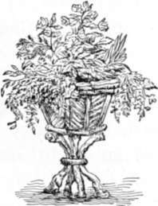
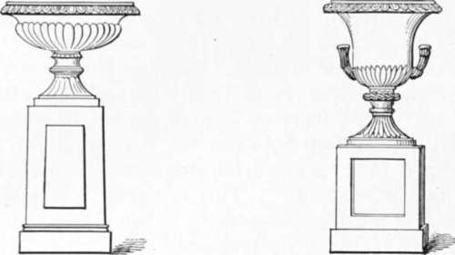
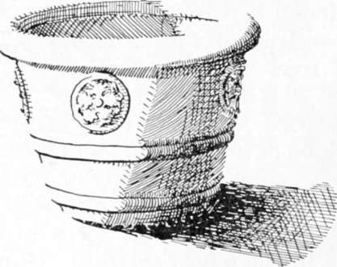

Embellishments. Part 2
Description
This section is from the book "Landscape Gardening", by Andrew Jackson Downing. Also available from Amazon: Landscape Gardening.
Embellishments. Part 2
There can be no reason why the smallest cottage, if its occupant be a person of taste should not have a terrace decorated in a suitable manner.* This is easily and cheaply effected by placing neat flower-pots on the parapet, or border and angles of the terrace, with suitable plants growing in them.
* Modern American taste, as expressed by leading architects, would not insist so strongly on terraces for every house. Indeed, such terraces are to be seen on only a small minority of the popular residences of the present, and their lack in the majority is not felt as a defect. Rather have the modern architects and landscape architects been able to adapt the residence to the ground most effectively by other means, especially by foundation f>lantinys, an expedient apparently little minded by Mr. Downing. — F. A. W.
Where there is a terrace ornamented with urns or vases, and the proprietor wishes to give a corresponding air of elegance to his grounds, vases, sundials, etc., may be placed in various appropriate situations, not only in the architectural flower-garden, but on the lawn, and through the pleasure-grounds in various different points near the house. We say near the house, because we think so highly artificial and architectural an object as a sculptured vase, is never correctly introduced unless it appear in some way connected with buildings, or objects of a like architectural character. To place a beautiful vase in a distant part of the grounds, where there is no direct allusion to art, and where it is accompanied only by natural objects, as the overhanging trees and the sloping turf, is in a measure doing violence to our reason or taste, by bringing two objects so strongly contrasted, in direct union. But when we see a statue or a vase placed in any part of the grounds where a near view is obtained of the house (and its accompanying statues or vases), the whole is accounted for, and we feel the distant vase to be only a part of, or rather a repetition of the same idea, — in other words, that it forms part of a whole, harmonious and consistent.
Vases of real stone, as marble or granite, are decorations of too costly a kind ever to come into general use among us. Vases, however, of equally beautiful forms, are manufactured of artificial stone, of fine pottery, or of cast iron, which have the same effect, and are of nearly equal durability, as garden decorations.
A vase should never, in the open air, be set down upon the ground or grass, without being placed upon a firm base of some description, either a plinth or a pedestal. Without a base of this kind it has a temporary look, as if it had been left there by mere accident, and without any intention of permanence. Placing it upon a pedestal, or square plinth (block of stone), gives it a character of art, at once more dignified and expressive of stability. Besides this, the pedestal in reality serves to preserve the vase in a perpendicular position, as well as to expose it fairly to the eye, which could not be the case were it put down, without any preparation, on the bare turf or gravel.
Large vases are sometimes filled with earth and planted with choice flowering plants, and the effect of the blossoms and green leaves growing out of these handsome receptacles, is at least unique and striking. Loudon objects to it in the case of an elegant sculptured vase, "because it is reducing a work of art to the level of a mere garden flower-pot, and dividing the attention between the beauty of the form of the vase and of its sculptured ornaments, and that of the plant which it contains." This criticism is a just one in its general application, especially when vases are considered as architectural decorations. Occasional deviations, however, may be permitted, for the sake of producing variety, especially in the case of vases used as decorations in the flower-garden.
A very pretty and fanciful substitute for the sculptured vase, and which may take its place in the picturesque landscape, may be found in vases or baskets of rustic work, constructed of the branches and sections of trees with the bark attached.* Figure 20 is a representation of a pleasing rustic vase which we have constructed without difficulty. A tripod of branches of trees forms the pedestal. An octagonal box serves as the body or frame of the vase; on this, pieces of birch and hazel (small split limbs covered with the bark) are nailed closely, so as to form a sort of mosaic covering to the whole exterior. Ornaments of this kind, which may be made by the amateur with the assistance of a common carpenter, are very suitable for the decoration of the grounds and flower-gardens of cottages or picturesque villas. An endless variety of forms will occur to an ingenious artist in rustic work, which he may call in to the embellishment of rural scenes, without taxing his purse heavily.
* Reference has already been made to the vogue of this "rustic" work in Mr. Downing's time and to its happy disappearance from the gardens of our own days. — F. A. W.
Fig. 20. Rustic Vase.
Fig. 21. Grecian Vase Fig. 22. Grecian Vase.
Sundials are among the oldest decorations for the garden and grounds, and there are scarcely any which we think more suitable. They are not merely decorative, but have also an useful character, and may therefore be occasionally placed in distant parts of the grounds, should a favorite walk terminate there. When we meet daily in our walks for a number of years, with one of these silent monitors of the flight of time, we become in a degree attached to it, and really look upon it as gifled with a species of intelligence, beaming out when the sunbeams smile upon its dial-plate.
Fig. 23. Modern Vase in Terra Cotta.
Continue to: